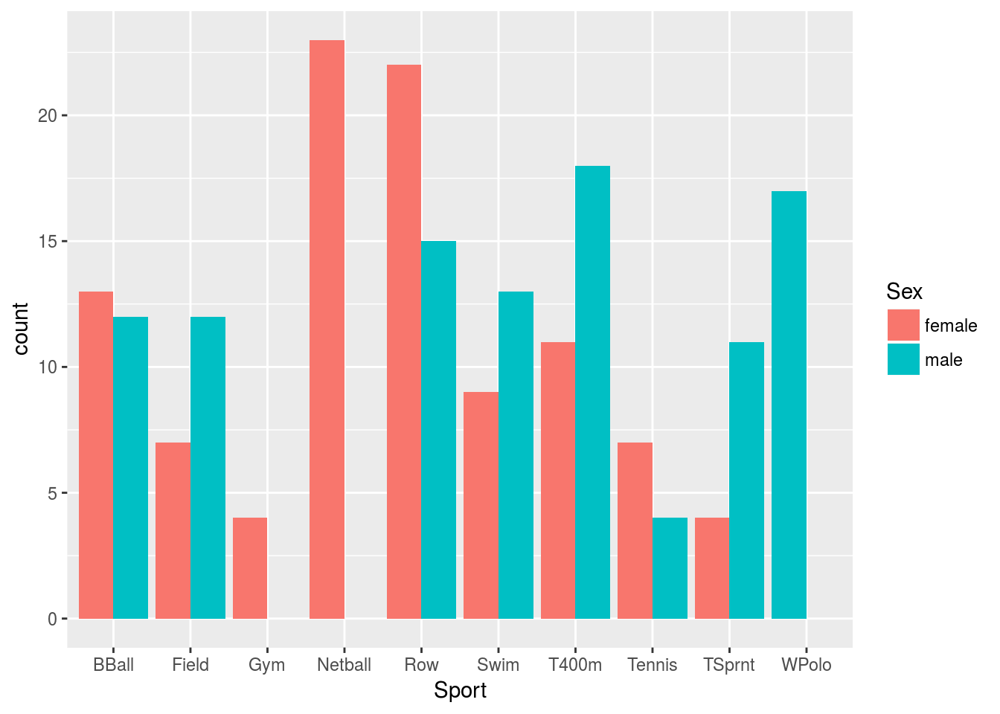

Displaying grouped bar charts in ggplot
Introduction
When you have two categorical variables to plot, grouped bar charts are one possible visualization. I learned something new about them today, from Hadley Wickham himself (well, via a tweet, anyway).
As an example, let’s use some data from the Australian Institute for Sport:
library(tidyverse)## ── Attaching packages ─────────────────────────────────────────────────────────────────────────────────────────────────── tidyverse 1.2.1 ──## ✔ ggplot2 2.2.1.9000 ✔ purrr 0.2.4
## ✔ tibble 1.4.1 ✔ dplyr 0.7.4
## ✔ tidyr 0.7.2 ✔ stringr 1.2.0
## ✔ readr 1.1.1 ✔ forcats 0.2.0## ── Conflicts ────────────────────────────────────────────────────────────────────────────────────────────────────── tidyverse_conflicts() ──
## ✖ dplyr::filter() masks stats::filter()
## ✖ dplyr::lag() masks stats::lag()athletes=read_tsv("http://www.utsc.utoronto.ca/~butler/c32/ais.txt")## Parsed with column specification:
## cols(
## Sex = col_character(),
## Sport = col_character(),
## RCC = col_double(),
## WCC = col_double(),
## Hc = col_double(),
## Hg = col_double(),
## Ferr = col_integer(),
## BMI = col_double(),
## SSF = col_double(),
## `%Bfat` = col_double(),
## LBM = col_double(),
## Ht = col_double(),
## Wt = col_double()
## )athletes## # A tibble: 202 x 13
## Sex Sport RCC WCC Hc Hg Ferr BMI SSF `%Bf… LBM Ht
## <chr> <chr> <dbl> <dbl> <dbl> <dbl> <int> <dbl> <dbl> <dbl> <dbl> <dbl>
## 1 fema… Netb… 4.56 13.3 42.2 13.6 20 19.2 49.0 11.3 53.1 177
## 2 fema… Netb… 4.15 6.00 38.0 12.7 59 21.2 110 25.3 47.1 173
## 3 fema… Netb… 4.16 7.60 37.5 12.3 22 21.4 89.0 19.4 53.4 176
## 4 fema… Netb… 4.32 6.40 37.7 12.3 30 21.0 98.3 19.6 48.8 170
## 5 fema… Netb… 4.06 5.80 38.7 12.8 78 21.8 122 23.1 56.0 183
## 6 fema… Netb… 4.12 6.10 36.6 11.8 21 21.4 90.4 16.9 56.4 178
## 7 fema… Netb… 4.17 5.00 37.4 12.7 109 21.5 107 21.3 53.1 177
## 8 fema… Netb… 3.80 6.60 36.5 12.4 102 24.4 157 26.6 54.4 174
## 9 fema… Netb… 3.96 5.50 36.3 12.4 71 22.6 101 17.9 56.0 174
## 10 fema… Netb… 4.44 9.70 41.4 14.1 64 22.8 126 25.0 51.6 174
## # ... with 192 more rows, and 1 more variable: Wt <dbl>This contains some physical and physiological information about 202 male and female elite athletes who play several different sports. One immediate question is “what sports do these athletes play”, with the followup question of whether it differs for males and females. Gender and sport are categorical variables, so a grouped bar chart is a reasonable display.
Types of two-variable bar chart
Stacked bar chart
The way to depict two variables on a bar chart is to specify one of them as x and the other one as fill, like this:
ggplot(athletes,aes(x=Sport,fill=Sex))+geom_bar()The variable in x is the “outer” variable, and in fill is “inner”, in the sense that we are looking at each Sport, and then within each sport we are looking at how many males and females there are. This seems to be sensible.
These are “stacked bars”: if the blue part of the bar is bigger, more males than females play that sport, and if the red part is bigger, more females than males. The height of the bar is the total number of athletes playing each sport.
Aside: if we do it the other way around:
ggplot(athletes,aes(fill=Sport,x=Sex))+geom_bar()we get two bars, one for each Sex, subdivided by what sport they play. This is hard to follow because there are a lot of sports. End of aside.
If our focus is on comparing the number of males and females within a sport, a stacked bar chart of this kind is not helpful, because the bars that we want to compare are not side by side. About the only hope within the stacked-bar world is to make all the bars the same height. We lose the total frequencies, but we gain something for comparison:
ggplot(athletes,aes(x=Sport,fill=Sex))+geom_bar(position="fill")A bar that is more than half red indicates a sport that mostly females play, such as gymnastics or netball. If you are female and grew up in the British Commonwealth, you probably played netball and not basketball. This plot at least enables us to compare sports in terms of male and female participation.
Grouped bar chart
What I think makes the best picture is not to stack the bars for each sport, but to put them side by side, to enable comparison by height:
ggplot(athletes,aes(x=Sport,fill=Sex))+geom_bar(position="dodge")
This shows not only what sports tend to be played by males or females, but also which sports are popular overall, such as rowing, or less popular, such as tennis, even though the sports are played by both genders.
And now we come to the reason for this post. Mainly I write notes like this so that I can find them again when I forget, as I inevitably will. If you look at sports played by only one sex, such as netball or water polo, you’ll see that their bars are twice as wide, whereas aesthetics appears to require them to be the normal width with an empty bar beside them. I didn’t know how to do that until just now. It’s a variation on position="dodge", thus:
ggplot(athletes,aes(x=Sport,fill=Sex))+
geom_bar(position=position_dodge(preserve="single"))
The bars are all the same width, even where one of the bars is empty for a sport.